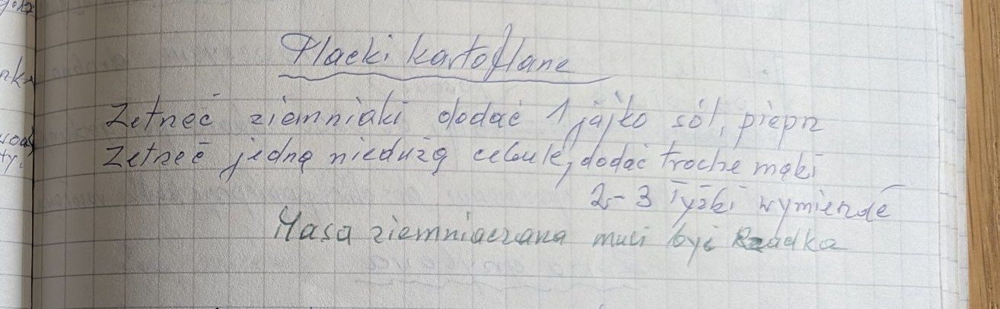

Placki kartoflane


Składniki
- ziemniaki
- 1 jajko
- 1 nieduża cebula
- 2-3 łyżki mąki
- sól, pieprz
Przygotowanie
- Zetrzeć ziemniaki i jedną niedużą cebulę.
- Dodać jajko, sól, pieprz i 2-3 łyżki mąki, wymieszać.
- Masa ziemniaczana musi być rzadka.
Oryginalny zapis
Placki kartoflane
Zetrzeć ziemniaki dodać 1 jajko sól, pieprz
Zetrzeć jedną niedużą cebulę, dodać trochę mąki
2-3 łyżki wymieszać
Masa ziemniaczana musi być rzadka